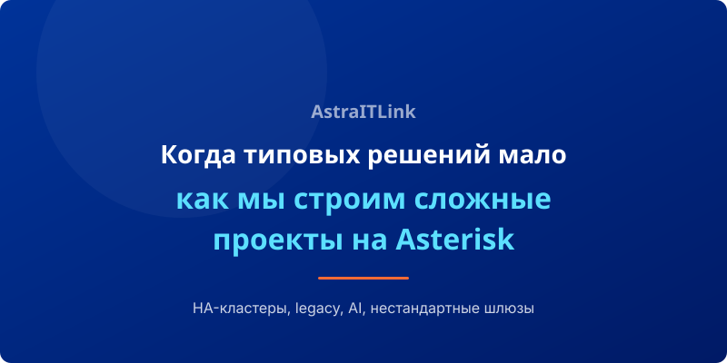

Большинство проектов по внедрению IP-телефонии укладываются в стандартные сценарии: настроили облачную АТС, подключили номера, добавили пользователей. Но есть задачи, которые требуют принципиально иного подхода. В этой статье расскажем о четырёх категориях сложных проектов, где Asterisk проявляет себя во всей полноте.
1. Высокая доступность: кластер на 2000 одновременных звонков
Задача: Федеральная логистическая компания с 12 филиалами. Требуется обеспечить бесперебойную связь для 1500 сотрудников. Допустимый простой — не более 5 минут в месяц (99.99% uptime).
Решение: Мы спроектировали отказоустойчивый кластер на базе Asterisk + Kamailio. Два геораспределённых сервера работают в режиме active-active. При сбое одного из них Kamailio автоматически перенаправляет трафик на второй. Запись звонков ведётся на отдельный кластер СХД.
Результат: Система стабильно обрабатывает до 2000 одновременных звонков. За 2 года эксплуатации — ни одного инцидента с простоем более 3 минут.
2. Legacy-интеграция и безопасность для госсектора
Задача: Государственный банк использует старые аналоговые линии (E1/TDM) от оператора. Требуется подключить их к современной IP-сети, обеспечить ГОСТ-шифрование трафика и выполнить требования ФСТЭК.
Решение: Установили медиа-шлюзы OpenVox с поддержкой E1 для конвертации TDM → SIP. Настроили Asterisk с модулями шифрования, сертифицированными ФСБ. Вся сигнализация идёт по TLS 1.3, голос — по SRTP с ГОСТ-алгоритмами.
Результат: Банк получил современную IP-АТС с полным соблюдением требований регуляторов. Аналоговые линии работают как резервный канал, автоматически включаясь при падении основного IP-соединения.
3. AI и аналитика в реальном времени
Задача: Колл-центр на 300 операторов хочет внедрить анализ тональности разговоров в реальном времени. При выявлении негатива система должна мгновенно подключать старшего оператора.
Решение: Настроили Asterisk для потоковой передачи голоса в AI-сервис через WebSocket. Задержка анализа тональности — менее 50 мс. При выявлении ключевых слов-триггеров Asterisk автоматически переводит звонок в «красную» очередь для опытных операторов.
Результат: Удовлетворённость клиентов выросла на 34%, среднее время разрешения конфликтных ситуаций сократилось с 12 до 3 минут.
4. Нестандартные шлюзы: GSM через Bluetooth
Задача: Строительная компания работает на удалённых объектах без интернета. Требуется обеспечить голосовую связь через обычные GSM-сети, но с централизованным управлением и записью разговоров.
Решение: Развернули Asterisk на сервере в головном офисе, настроили Bluetooth GSM-шлюзы на объектах. Сотрудники используют SIP-софтфоны на телефонах, которые через Bluetooth подключаются к GSM-шлюзу. Все звонки маршрутизируются через центральную АТС с записью.
Результат: Полный контроль над корпоративной связью на объектах без интернета. Экономия — 70% по сравнению с тарифами мобильных операторов.
Вывод
Типовые решения покрывают 80% потребностей рынка. Но именно оставшиеся 20% сложных, нестандартных задач приносят бизнесу максимальную ценность. Asterisk с его открытой архитектурой и гибкостью позволяет решать эти задачи там, где коробочные продукты бессильны.